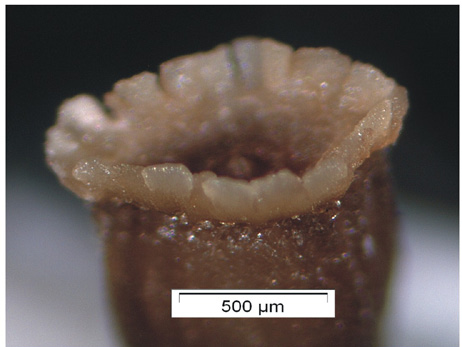

Background: Berkheya is a large, mainly southern African genus of approximately 75 species, several of which are poorly known and under-collected. Since revision in 1959, only a few new species have been described. Publication of new taxa facilitates conservation objectives and contributes to a better understanding of the southern African flora. Objectives: The objectives of this study were to describe a new species of Berkheya , consider its taxonomic position within the genus and assess its conservation status. Methods: Macromorphology and micromorphology of the new species were compared with known species. Results: Berkheya dumicola N.G.Bergh & Helme was described from two subpopulations from the northern Bokkeveld escarpment, Northern Cape Province, South Africa. The species is a tall shrub with radiate flowerheads, toothed receptacle alveole margins, a uniseriate pappus of small, rounded scales and very short twin-hairs on the cypsela. Conclusion: Berkheya dumicola is a new species with a unique combination of features. Based on morphological characteristics, its closest relative within the genus is likely to be the recently described Berkheya chrysanthemoides J.C.Manning & Goldblatt. The limited geographic extent and small population size of B. dumicola warrant an International Union for Conservation of Nature (IUCN) status of ‘Endangered’.
Full text
Full text is available as a scanned copy of the original print version.
Get a printable copy (PDF file) of the
complete article, or click on a page image below to browse page by page.
Links are also available for
Selected References.
Images in this article

FIGURE 3: Micromorphological features of Berkheya dumicola, taken from rehydrated material of the type collection, depicting, (a) ray floret and associated receptacular tissue, (b) disc floret, (c) dissected disc floret showing style and anthers, (d) section through receptacle to show embedded cypselae and alveolar margins, (e) dry cypsela and (f) pappus.